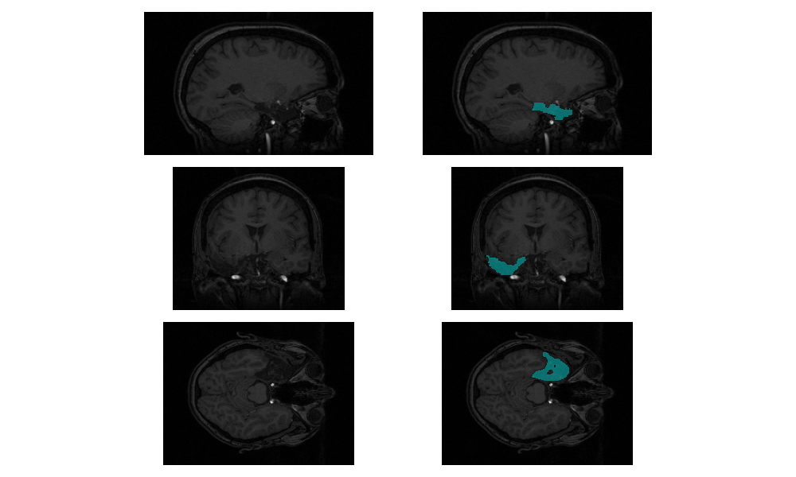

<table border="1" class="dataframe">
  <thead>
    <tr style="text-align: right;">
      <th></th>
      <th>Region</th>
      <th>Remaining (%)</th>
      <th>Volume Resected (cubic cm)</th>
    </tr>
  </thead>
  <tbody>
    <tr>
      <th>0</th>
<<<<<<< HEAD
      <td>left hippocampus</td>
      <td>77.356</td>
      <td>0.437737</td>
    </tr>
    <tr>
      <th>1</th>
      <td>left amygdala</td>
      <td>66.747</td>
      <td>0.131607</td>
    </tr>
    <tr>
      <th>2</th>
      <td>left entorhinal</td>
      <td>58.852</td>
      <td>0.820160</td>
    </tr>
    <tr>
      <th>3</th>
      <td>left fusiform</td>
      <td>82.145</td>
      <td>1.325607</td>
    </tr>
    <tr>
      <th>4</th>
      <td>left inferior temporal</td>
      <td>61.494</td>
      <td>3.942490</td>
    </tr>
    <tr>
      <th>5</th>
      <td>left middle temporal</td>
      <td>75.336</td>
      <td>2.728462</td>
    </tr>
    <tr>
      <th>6</th>
      <td>left parahippocampal</td>
      <td>64.859</td>
      <td>0.642776</td>
    </tr>
    <tr>
      <th>7</th>
      <td>left superior temporal</td>
      <td>87.452</td>
      <td>2.243042</td>
    </tr>
    <tr>
      <th>8</th>
      <td>Total Resection</td>
      <td>NaN</td>
      <td>20.966530</td>
=======
      <td>Hippocampus_R</td>
      <td>93.471</td>
      <td>0.340462</td>
    </tr>
    <tr>
      <th>1</th>
      <td>ParaHippocampal_R</td>
      <td>45.980</td>
      <td>3.357887</td>
    </tr>
    <tr>
      <th>2</th>
      <td>Amygdala_R</td>
      <td>93.445</td>
      <td>0.111580</td>
    </tr>
    <tr>
      <th>3</th>
      <td>Fusiform_R</td>
      <td>83.507</td>
      <td>2.194405</td>
    </tr>
    <tr>
      <th>4</th>
      <td>Temporal_Pole_Sup_R</td>
      <td>77.621</td>
      <td>1.561165</td>
    </tr>
    <tr>
      <th>5</th>
      <td>Temporal_Mid_R</td>
      <td>92.381</td>
      <td>1.802444</td>
    </tr>
    <tr>
      <th>6</th>
      <td>Temporal_Pole_Mid_R</td>
      <td>49.312</td>
      <td>2.879143</td>
    </tr>
    <tr>
      <th>7</th>
      <td>Temporal_Inf_R</td>
      <td>85.627</td>
      <td>2.605438</td>
    </tr>
    <tr>
      <th>8</th>
      <td>Cerebelum_3_R</td>
      <td>99.906</td>
      <td>0.000954</td>
    </tr>
    <tr>
      <th>9</th>
      <td>Cerebelum_4_5_R</td>
      <td>99.561</td>
      <td>0.020027</td>
    </tr>
    <tr>
      <th>10</th>
      <td>Total Resection</td>
      <td>NaN</td>
      <td>15.837669</td>
>>>>>>> a20f7f1373ea8ba45069d98d5a6b54271002ab7f
    </tr>
  </tbody>
</table>
 